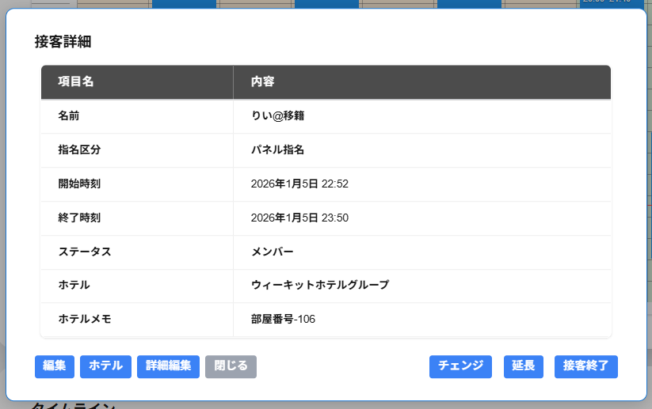

接客詳細の画面には以下の項目が表示されます。
・名前
キャスト名が表示されます。
・指名区分
指名区分が表示されます。
・開始時間
該当の接客の開始時間が表示されます。
・終了時間
該当の接客の終了時間が表示されます。
・ステータス
該当のキャストのステータスが表示されます。
・ホテル
選択したホテルが表示されます。
※ホテルを選択していない場合は-と表示されます。
※店舗情報でホテルの使用を選択していない場合は、ホテルは表示されません。
・ホテルメモ
部屋番号など、入力したホテルのメモが表示されます。
※ホテルを選択していない場合は、ホテルメモは表示されません。
※店舗情報でホテルの使用を選択していない場合は、ホテルは表示されません。
・編集
接客詳細を編集することができます。
・ホテル
ホテルの編集をすることができます。
※店舗情報でホテルの使用を選択していない場合は、ホテルは表示されません。
・詳細編集
接客の詳細情報を編集することができます。
・チェンジ
接客中のキャストをチェンジすることができます。
・延長
接客時間を延長することができます。
・接客終了
※接客中の場合のみ接客終了が表示されます。
・接客中に戻す
※接客が終了している接客の場合のみ接客終了が表示されます。
